01O Clos e sua história
O Clos de Vougeot, mais que qualquer outro vinhedo, simboliza a complexa e turbulenta história do vinho da Borgonha, e François LABET produz um dos rótulos mais emblemáticos daquele clos, o Château de La Tour.
Dois castelos no mesmo Clos
Um dos maiores cartões postais da Borgonha, Clos de Vougeot é facilmente identificável por seus muros de pedras e pelo grande castelo dos monges, o Château du Clos de Vougeot. Mas esse castelo, comprado em 1944 para a Confrérie des Chevaliers du Tastevin, não é o único do Clos: pouco mais ao norte, junto ao muro, se ergue o Château de La Tour, da família de François LABET, um dos cerca de 80 proprietários que dividem os seus 50 hectares. François LABET é o único proprietário do Clos que vinifica entre seus muros há cinco gerações. E seu bisavô chegou a largar tudo para vir plantar café no Brasil.
Nota da redação (2026) O Château du Clos de Vougeot foi comprado em 29 de novembro de 1944 pela Société civile des Amis du Château du Clos de Vougeot, que o cedeu à Confrérie des Chevaliers du Tastevin. A adega e a cuverie são dos monges (séculos XII a XV); a ala renascentista foi construída em 1551.
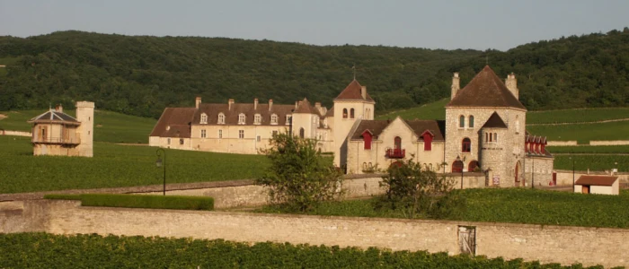
Clos, em francês, quer dizer fechado, cercado. Na Borgonha, porém, a palavra diz muito mais: refere-se a um vinhedo cercado por muros de pedras, um legado dos monges cistercienses do século XII, que tinham uma vocação de construtores e desenvolveram as técnicas de viticultura e da vinificação dos Grandes vinhos. Situado a 800 metros de La Romanée-Conti, entre Musigny e os Grands-Échezeaux, o Clos de Vougeot é o maior Grand Cru da Côte de Nuits, com apenas 50 hectares, uma enormidade para os padrões da região. Com a Revolução, o Clos de Vougeot foi tomado da Igreja (consequência do decreto que pôs todos os bens eclesiásticos à disposição da nação, em 1789), vendido em 1791 e, um século depois, fracionado e revendido.
Infográfico
O Clos e seus vizinhos
O Clos de Vougeot ocupa o pé da encosta da Côte de Nuits, entre a vila de Vougeot e os Grands Crus de Chambolle-Musigny e de Vosne-Romanée. Em 50 hectares, desce de 265 a 240 metros de altitude, e todo ele é Grand Cru.
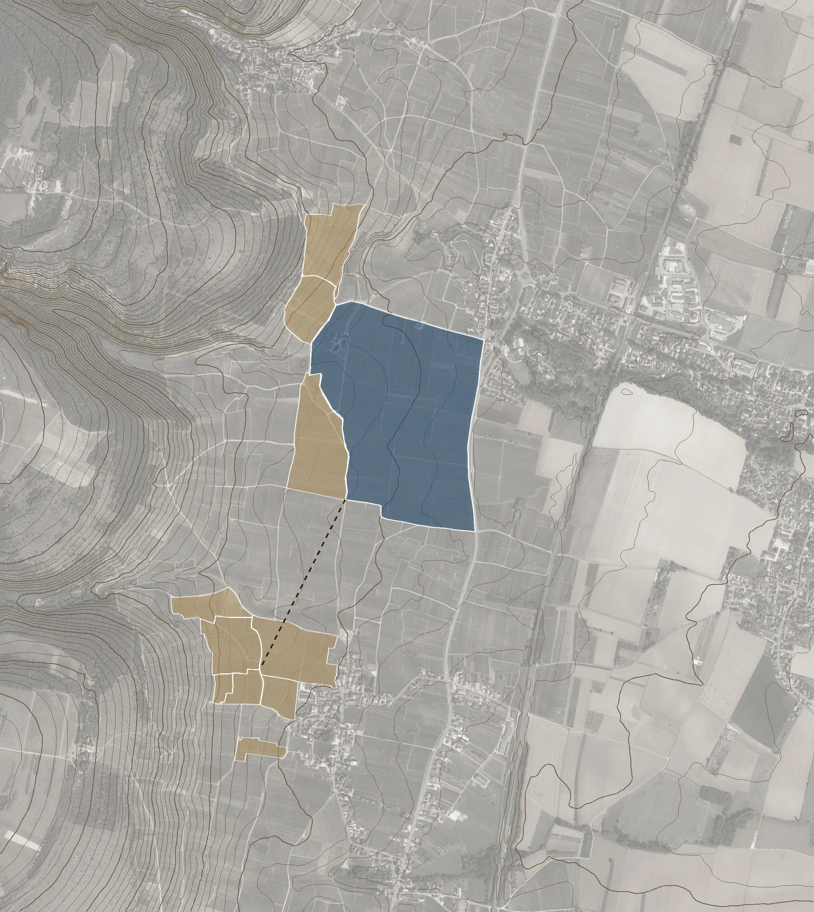
MusignyGrands-ÉchezeauxLa Romanée-ContiLa TâcheRichebourgRomanée-Saint-VivantLa RomanéeClos de Vougeot50,8 ha · Grand Cru808 maté La Romanée-ContiVOUGEOTCHAMBOLLE-MUSIGNYVOSNE-ROMANÉEplanície do Saône ↘a encosta ↖0 · 250 · 500 mN ↑Clos de Vougeotoutros Grands Crus vizinhoscurvas de nível a cada 5 m
2Do Bourgogne ao Grand Cru
Os degraus das apelações da Borgonha, com a parte de cada um na produção e os preços que François LABET pratica nos seus vinhos, na porta da adega, em 2012.
- Grands Crus1% da produção
Château de La Tour, Clos de Vougeot, preço na adega em 201250 a 60 €; Vieilles Vignes, 70 a 80 €
- Villages e Premiers Crus46% da produção
Domaine Pierre Labet, preço na adega em 2012villages tintos, 15 €; brancos e Premiers Crus tintos, 20 €; Premiers Crus brancos, 25 €
- Regionais (Bourgogne)53% da produção
Domaine Pierre Labet, preço na adega em 2012Bourgogne tinto, cerca de 10 €
3Novecentos anos do Clos
- 1098
Fundação da abadia de Cîteaux, a 12 km do Clos.
- 1109–1115
Primeiras doações de terras aos monges em Vougeot.
- c. 1336
O muro fecha o Clos.
- 1551
O abade Jean Loisier ergue a ala renascentista do castelo.
- 1791
Bem nacional, o Clos é vendido inteiro em leilão.
- 1818
O banqueiro Gabriel-Julien Ouvrard compra o Clos.
- 1889
Os herdeiros vendem a um grupo de négociants: começa a divisão em parcelas. Léonce Bocquet fica com o castelo.
- 1890–91
Os Beaudet, négociants de Beaune, constroem o Château de La Tour.
- 1920
Charles Beaudet vende La Tour aos Morin e parte para o Brasil.
- 1925
Sua filha casa-se com Jean Morin: La Tour volta à família.
- 1944
O castelo do Clos é comprado para a Confrérie des Chevaliers du Tastevin.
- 1984
François Labet assume a propriedade.
- 1987
Cachos inteiros, 100%, em todas as safras.
- 1992
Fim da química sintética no vinhedo.
- 2010
Centenário das vinhas de 1910 e a primeira Hommage à Jean Morin.
- 2015
Os Climats da Borgonha entram no patrimônio mundial.
Fontes: lieux-dits e parcelas do cadastro Etalab (os contornos dos Grands Crus seguem os lieux-dits e são aproximados); ortofoto e relevo IGN; BIVB, números-chave de 2024 (parte de cada nível na produção, média de cinco safras); Wikipedia (Clos de Vougeot, Château du Clos de Vougeot); Burgundy Report; UNESCO. Preços: François LABET, nesta entrevista.
O Château de La Tour, a maior propriedade dentro do Clos de Vougeot, com cerca de 5,5 hectares e velhas vinhas de Pinot Noir com mais de 100 anos, produz os melhores vinhos daquele Clos. Vinhos elegantes e refinados, que são a imagem de François LABET, um Chevalier du Tastevin e membro da comissão que trabalha para que a Borgonha seja reconhecida como patrimônio mundial da humanidade junto à UNESCO. François LABET recebeu RENDEZVOUS em seu Château para contar a história do Clos e explicar todos os detalhes que fazem o Château de La Tour tão especial.
Nota da redação (2026) No cadastro, o GFV Château de La Tour tem 5,48 ha no Clos, em seis parcelas, das quais 5,40 ha de vinhas (DGFiP, 2025). O segundo maior proprietário tem 2,9 ha. Os Climats da Borgonha foram inscritos no patrimônio mundial da UNESCO em 4 de julho de 2015.
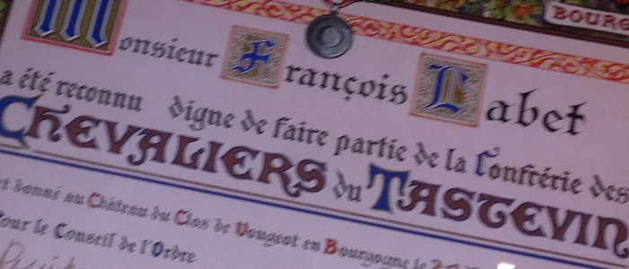
“O Château de La Tour, em Clos de Vougeot, é uma propriedade única”, afirma François LABET, e explica: “Ao contrário das outras regiões vitícolas da Borgonha, nossa propriedade não se encontra em um vilarejo. O espaço aqui em Borgonha é muito raro, e esta região corresponde a apenas 3% do vinhedo francês, e os Grands Crus da Borgonha, dos quais o Clos de Vougeot faz parte, correspondem a 1,5% destes 3%, ou seja, é ridiculamente pequeno, praticamente nada”.
Nota da redação (2026) Pelos números-chave do BIVB (2024), os Grands Crus somam cerca de 1% da produção da Borgonha, e a Borgonha, cerca de 3% da produção francesa.
Como o Château de La Tour se inscreve na longa história deste Grand Cru, François começa pela história do Clos: “Clos de Vougeot que, como diz o nome, foi delimitado, cercado de muros, foi criado há aproximadamente 900 anos pelos monges de Cister, da abadia de Cîteaux. Embora tenhamos conhecimento de que existem vinhas na Borgonha há mais de 2.000 anos, sabemos que foi com a chegada dos religiosos que o vinhedo da Borgonha se desenvolveu. E o que é extraordinário é que eram monges ‘construtores’. Eles construíram a abadia, depois a catedral, modelaram o terroir, o climat, este famoso climat da Borgonha que adoraríamos ver reconhecido como patrimônio mundial da humanidade pela UNESCO.”
“O Clos de Vougeot foi propriedade dos monges de Cister até a Revolução Francesa, quando, assim como praticamente todos os bens da Igreja, foi confiscado e vendido em leilão. O Clos de Vougeot foi então arrematado por um negociante que o revendeu imediatamente a um homem apaixonado pelo vinho, um banqueiro, que se chamava Gabriel-Julien OUVRARD.
OUVRARD era também o proprietário de La Romanée-Conti e do Clos de Bèze, ou seja, era um amante de vinhos e um visionário. Sua família conservou o Clos de Vougeot por mais duas gerações, mesmo depois de vender os outros vinhedos. Clos de Vougeot foi conservado até 1890, quando ocorreu a primeira venda por parcelas”.
Nota da redação (2026) Ouvrard comprou o Clos de Vougeot em 1818 e La Romanée-Conti em 1819. A posse do Clos de Bèze não aparece nas fontes consultadas. Os herdeiros venderam o Clos em 1889 a um grupo de negociantes, e foi essa venda que o dividiu em parcelas.
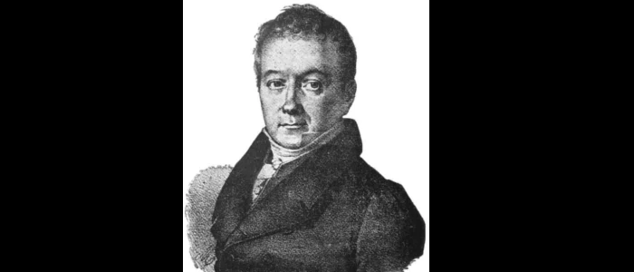
O mapa de 1890
“Atrás de mim está o mapa dos compradores de 1890 e meus ancestrais compraram esta parcela, onde, no ano seguinte, construíram uma cave e uma cuverie, que chamaram de Château de La Tour. E por que a construíram? Porque eram negociantes de vinho e tinham comprado, por dois anos seguidos, a colheita inteira do Clos de Vougeot produzida pela família OUVRARD. Acontece que a colheita comprada estava estocada no Château du Clos de Vougeot, cujo novo dono, Léonce BOCQUET, o ‘melhor inimigo’ de meus tataravós no comércio de vinho, lhes pediu que retirassem seu vinho daquele château. Por esta razão, meus ancestrais construíram essa cave no Clos de Vougeot, para preservar a ‘vinificação dentro dos muros’ e a expedição a partir do Clos de Vougeot.” Assim se explica por que existem dois castelos no Clos de Vougeot.
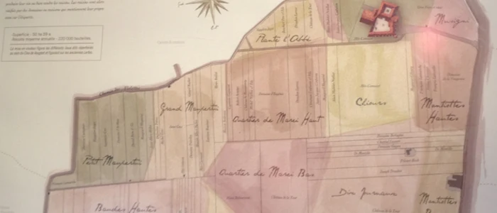
O cadastro hoje
163 parcelas, cerca de 80 donos
O mapa que François mostra é o da venda de 1889, quando o Clos começou a ser dividido. Hoje, o lieu-dit Clos de Vougeot soma 50,81 ha em 163 parcelas cadastrais, quase todas em tiras estreitas que descem a encosta. O Château de La Tour continua sendo o maior dono, com quase o dobro do segundo.
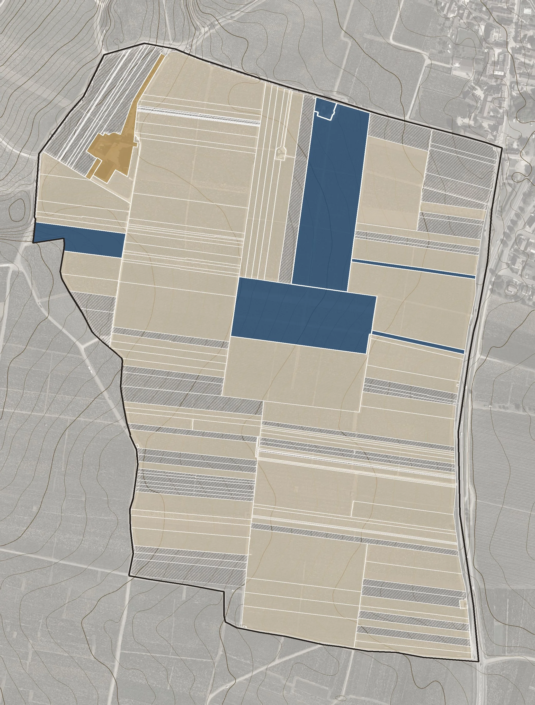
Château de La Tour5,48 ha em 6 parcelas, o maior dono do ClosO château (1890–91)junto ao muro norteChâteau du Clos de Vougeotdos monges; hoje, da Confrérie du Tastevin265,1 m240,6 mD974, a antiga N740 · 125 · 250 mN ↑Château de La TourChâteau du Clos de Vougeotoutras empresas e domaines (69)pessoas físicas (dados não públicos)curvas de nível a cada 1 m
40,3 haem nome de 69 empresas, domaines e associações
10,51 haem nome de pessoas físicas, cujo nome o fisco não publica
24,5 mde desnível entre o alto, a oeste (265,1 m), e o pé do Clos, junto à estrada (240,6 m)
Algumas famílias aparecem em mais de uma sociedade (Méo-Camuzet em três, Leroy em duas), e o mapa mostra quem é dono, não quem cultiva. Fontes: DGFiP, arquivo das parcelas de pessoas jurídicas (situação de 1º de janeiro de 2025); cadastro Etalab (lieu-dit e parcelas); ortofoto e relevo IGN (RGE ALTI).
“Então esta ‘casa’ na qual nos encontramos foi construída em 1891, e foi um pouco modificada depois da Segunda Guerra, porque ficou bastante danificada.”
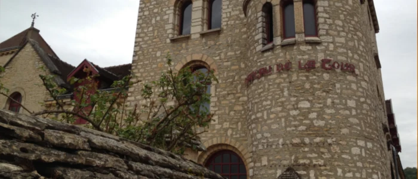
“Na época, a compra foi de 2,25 hectares e, hoje em dia, nós possuímos 6 hectares, o que faz com que sejamos a maior parcela do Clos (6 hectares dos 50 no total). Isso pode parecer muito pouco sob o olhar dos padrões mundiais, ou mesmo do bordalês. Em Bordeaux, um château médio tem 50 hectares, o equivalente a todo o Clos de Vougeot. E isso é um château de porte médio, porque uma grande propriedade no Médoc pode ter de 80 a 100 hectares, duas vezes o Clos de Vougeot inteiro.”
O bisavô que foi plantar café no Brasil
“Após a aquisição, a história fica bastante interessante: o filho dos criadores do Château de La Tour, que veio a ser meu bisavô Charles BEAUDET, depois da guerra de 1914, teve sérios problemas respiratórios, pois era bombardeado constantemente com gás nas trincheiras, a iperita, o gás mostarda, e seu médico lhe disse: ‘Se você quiser viver, mude-se para um país quente e úmido.’ Então ele vendeu sua Maison de Négoce em Beaune, seu vinhedo da Côte de Beaune e o Château de La Tour para a família MORIN, de Nuits-Saint-Georges, e partiu para o Brasil com minha bisavó, em 1920, para plantar café.”
“Eles conservaram uma propriedade em Beaune, e voltavam todos os verões (inverno no hemisfério sul, verão no hemisfério norte), mas não puderam fazê-lo em 1939 (por causa da 2ª Guerra na Europa). Então meu bisavô só voltou em 1946, e como ele estava ficando velho, voltou a morar em Nuits-Saint-Georges. Durante esse tempo, sua filha única, que havia ficado na França, conheceu um rapaz, os dois se apaixonaram e se casaram. Acontece que esse jovem era Jean MORIN, o filho da família que havia comprado Château de La Tour. Então, desta forma, a propriedade voltou para a minha família”.
Nota da redação (2026) O casamento com Jean MORIN foi em 1925. A filha do casal, Jacqueline, mãe de François, assumiu a propriedade a partir da safra de 1975.
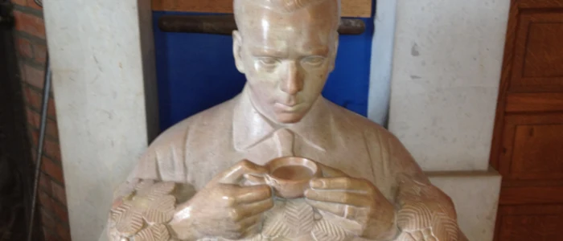
“Bom, o Château de La Tour foi propriedade de meu avô, Jean MORIN até 1974, quando a passou para minha mãe e minha tia. E, hoje em dia, temos uma associação da família de cotistas/proprietários, da qual eu sou o gestor e responsável pela propriedade desde 1984, quando tinha 30 anos”.
Cinco gerações
Os tataravós
Os BEAUDET, négociants de Beaune
compram terras no Clos em 1889 e constroem o Château de La Tour em 1890–91
O bisavô
Charles BEAUDET
intoxicado pelo gás mostarda na Primeira Guerra, vende La Tour aos MORIN em 1920 e vai plantar café no Brasil
Os avós
A filha de Charles e Jean MORIN
casam-se em 1925; o filho dos compradores devolve La Tour à família. Jean MORIN é dono até 1974
A mãe
Jacqueline LABET, com a irmã
assumem a propriedade a partir da safra de 1975
François LABET
à frente desde 1984
cachos inteiros desde 1987, sem química desde 1992
O gosto de François LABET por Grandes vinhos (fazer e beber) começou muito cedo, e talvez isto explique, em parte, a elegância do Château de La Tour: “O vinho é a imagem das pessoas que o fazem, isso é um fato. Durante minha juventude eu era alimentado (e bem alimentado), por todo tipo de alimento ‘terrestre’ (podemos falar em alimento sólido), os melhores e mais bem feitos. E podemos falar em alimento líquido também, ou seja, o vinho. Quando eu ia jantar na casa dos meus avós não bebíamos nada que não tivesse ao menos 50 anos. Eu bebi 1904, 1909, 1911, 1915, 1919, 1923, 1929… Apenas vinhos de antes da guerra”.
O vinho é a imagem das pessoas que o fazem.
François LABET
02A memória dos grandes vinhos
“A memória do Musigny 1919 ainda é clara para mim. O Clos de Vougeot 1895 também. E o meu objetivo sempre foi de reproduzir este tipo de vinho fantástico, mesmo sabendo que, em relação à safra 2010, por exemplo, eu vou ter certa dificuldade em bebê-lo daqui a 50 anos, porque terei certa dificuldade em estar vivo até lá!” [risos].
“Eu não tenho nenhuma formação vitícola, nem vinícola, porém, não acho que seja algo obrigatório, nem indispensável. O bom senso e a reflexão são mais importantes, mas é claro que adquiri conhecimento ao longo de todos esses anos. Eu tenho minhas raízes na vinha, nasci em Nuits-Saint-Georges, em uma família do vinho. Hoje em dia eu conheço perfeitamente a vinha, conheço perfeitamente o vinho, mas no início havia ao meu lado um administrador e, depois, eu assumi.”
Sem química desde 1992
O bom senso e a reflexão levaram François a adotar práticas mais naturais de viticultura, porém, sem radicalismos: “Em 1992, eu mudei nosso modo de cultivo convencional para praticar um cultivo sem nenhuma química. Eu não tenho o direito de chamá-lo BIO, porque não tenho a certificação, porém, nosso princípio de viticultura é orgânico há 20 anos”.
Para François, um grande vinho é feito no vinhedo, e não durante a vinificação: “Eu considero que, em uma garrafa, 85% do resultado vem da vinha, da fruta. Por isso deve existir um rigor absoluto na condução do vinhedo, no trabalho manual, mas também no tratamento do solo, ou seja, no aporte que trazemos (porque nós podemos considerar que após 20 anos, o solo foi ‘lavado’ de tudo que havíamos feito anteriormente). Hoje em dia nós temos uvas que são verdadeiramente representativas de nosso solo, de nosso terroir. Por isso eu considero que temos vinhos que têm mais pureza e mais mineralidade. Isso dito, o fato é que nosso métier é agrícola e, portanto, devemos ser o mais atentos e cuidadosos possível, mas, se o bom Deus não nos dá condições para nascer e amadurecer nossos frutos, não faremos bons vinhos, isto é óbvio”.
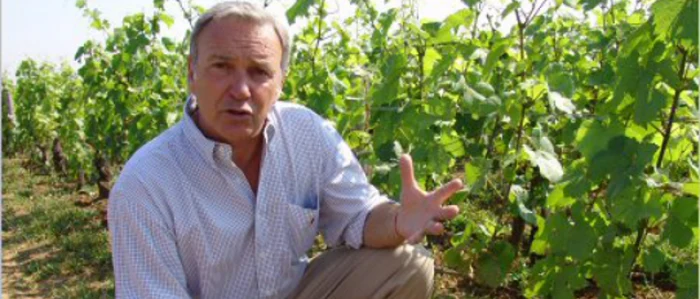
Para entender exatamente sua filosofia do vinho, François LABET nos explica todos os detalhes de suas práticas de viticultura: “Nós utilizamos apenas cobre e enxofre, como química, e utilizamos também a ‘confusão sexual’, com feromônios que desorientam a reprodução dos insetos que atacam a vinha, mas nenhum herbicida. Tivemos que evoluir, pois tivemos dois anos MUITO úmidos em 2007 e 2008, que acarretaram uma grande perda na colheita, então, nós mudamos um pouco nosso modo de cultura do solo. A partir do início da primavera, nós deixamos o capim crescer entre as fileiras de vinha (claro que nós a controlamos, aparamos…), e percebemos nos dois últimos anos (não em 2009, porque 2009 foi um ano excepcional) que não tivemos nenhuma podridão, porque o capim que cresce entre os pés de vinha serve de captador da umidade excessiva”.
03O trabalho no vinhedo
François explica que deixa o capim se desenvolver no vinhedo e que esse capim serve como regulador da umidade excessiva, a absorvendo em parte, e diminuindo sensivelmente a ameaça da podridão cinzenta: “Anteriormente, nós tínhamos um solo completamente capinado, perfeitamente liso, e que retinha toda a umidade; e é exatamente a umidade deste solo que cria as condições favoráveis ao desenvolvimento do Botrytis, o fungo da podridão cinzenta.”
“O trabalho de capinar ou simplesmente aparar o mato é rigorosamente o mesmo. O que fazemos agora, no início da primavera, quando a vinha começa a brotar, é estarmos atentos para deixar no pé apenas brotos que vão alimentar as uvas, e por isso retiramos os gourmands, os brotos que saem direto do tronco, e depois, deixar apenas certa quantidade de uvas por pé de vinha, o que em média, corresponde a seis cachos por pé”.
No vinhedo
- 1O capim entre as fileiras controla a umidade excessiva
- 2Retirada dos gourmands
- 3As podas Guyot e Cordon de Royat (à esquerda)
“A natureza é perfeita!”
François não concorda com certas técnicas de viticultura, e chama a atenção para a ‘moda’ da vendange verte, que consiste em eliminar cachos considerados excessivos em um pé de vinha, com objetivo de concentrar as uvas selecionadas para continuarem no pé. Esta prática é aplicada na véraison, o momento em que as uvas começam a ganhar cor, nas castas tintas, ou a ficar translúcidas, nas brancas: “Eu sou completamente contrário à vendange verte que é um processo muito recente na Borgonha (há apenas alguns anos que se fala de vendange verte por aqui). Para mim, isto é um sistema que objetiva mais a ‘aparência’ do que outra coisa. O método da vendange verte consiste em, uma vez passadas as geadas do mês de maio e escapado dos granizos de julho, retiram-se os cachos excedentes, com o fim de obter uma maior concentração nas uvas restantes. Esta é, entretanto, uma decisão extremamente complexa! Se você tem 12 cachos, QUAIS deles vai cortar? Isso pode ser feito pelos viticultores, mas nunca por equipes de jovens colhedores, que vão pensar: bom, se tem 12 cachos e eu tenho que retirar 6, então: 1, 2, 3, 4, 5, 6 e pronto! E isso não funciona assim!”.
“A natureza é perfeita! Se desde o começo você tem seis cachos, toda seiva montante será concentrada nestas uvas, entretanto, se você tem 12 e depois retira 6, a planta vai reagir violentamente, enviando mais seiva para os seis cachos restantes, então teremos uvas que vão ser muito maiores, e que seriam menos concentradas se existissem sozinhas desde o início”.
A vendange verte, segundo François
“A vendange verte existia no sudoeste, mas aqui é algo recente, e eu tenho certeza que a maioria dos viticultores que você entrevistar responderá como eu. Eles vão lhe dizer que preferem fixar a colheita desde o início, no momento em que brota”.
François LABET tem mais duas convicções sobre os grandes vinhos elegantes, uvas perfeitamente maduras e vinificação com engaço. “Nós constatamos, nos últimos anos, uma mudança evidente do clima aqui em nossa região setentrional (estamos no paralelo 47 norte, ou seja, relativamente ao norte), e este aquecimento nos é benéfico porque nos últimos 15 anos, nós colhemos uvas perfeitamente maduras. Mas o que são uvas maduras? Uma uva está madura quando tudo está em equilíbrio, não somente os níveis de açúcar estão normais, mas também o engaço, a parte ‘vegetal’ do cacho, que nós usamos 100% aqui (para mim é muito importante), precisa estar maduro, assim como a semente e a casca. Nós temos frutas que são agradáveis para comer e este é, aliás, um elemento importante na decisão da data da colheita. A degustação das uvas é muito importante, e vem como suporte às análises”.
“As análises de laboratório vão nos dar a potência em álcool (através do açúcar), o pH, a acidez total… E nós fazemos também análises de ácido tartárico e ácido málico (que nos orientam muito, principalmente o ácido málico), mas para nós tudo isso serve de indicação; é como acompanhar a previsão do tempo: se está previsto chuva no final da tarde, nós aparamos o capim hoje, e não amanhã. Serve para nos dar indicações de ‘quando’ agir e não para nos guiar no ‘que’ fazer”.
Pêssegos de supermercado
Sobre o papel da degustação das uvas como critério em suas decisões, François dá um exemplo curioso: “A degustação da fruta é um suporte à análise, mas é essencial! Por exemplo: quando você vai a um supermercado, você encontra pêssegos, damascos, abacates que são magníficos de se ver, mas se você pega neles, são assim”, e bate na mesa, para mostrar que as frutas são duras como madeira. “Mas fazer o quê? Nós as compramos mesmo assim e as guardamos por três dias em casa, pensando que vão amadurecer. E então, as frutas começam a apodrecer, porque foram colhidas verdes e depois guardadas em câmaras frias com nitrogênio. Com as uvas é igual! Você faz as análises, vê que o nível de açúcar é perfeito, que a acidez é elevada, e pensa: Ótimo! Vamos colher. Porém, quando você prova as uvas, elas são duras, as sementes verdes… você vai fazer um vinho desequilibrado”.
“Peguemos o exemplo de 2003, o ano que fez um calor excepcional. Alguns se precipitaram para colher cedo, porque acharam que já havia bastante açúcar e um nível de acidez normal, mas fizeram vinhos que hoje em dia são totalmente desequilibrados. Era necessário esperar. São cem dias entre a flor e a colheita, e não podemos encurtar 25 dias. Existe uma margem de mais ou menos 6 dias, mas nunca 25 a menos, ou mesmo 15. Era necessário esperar, e eu me lembro muito bem que nós colhemos no dia 25 de setembro, e temos vinhos que vão desafiar o tempo, como os 1947, ou seja, uma GRANDIOSÍSSIMA safra. Então é necessário refletir bem, estar bem fundamentado, e estar atento a vários parâmetros. Além disso, como nós vinificamos em ‘inteiro’ é fundamental atingir a total maturidade também do engaço”.
“Nós nunca fizemos vinhos tão bons como em 2010. E naquele ano chovia e fazia frio no mês de junho; muitos dos botões foram ‘abortados’ e o que tivemos ao final, foi uma quantidade normal de uvas, porém de tamanho muito pequeno. Pouco sumo e muita concentração, com uma maturidade perfeita, o que nos permitiu fazer uma safra extraordinária”.
“2009 foi um ano abençoado por Deus. Nós tivemos a quantidade certa com uma grande qualidade. 2009 é perfeito! A diferença entre 2009 e 2010 foi o volume; 2010 é 50% menor que 2009. Isso é a natureza quem decide. Porque como você sabe, nós selecionamos as uvas, e na vinificação de vinho tinto, fazemos uma grande ‘sopa’ de uva em uma cuba. E, da mesma forma que não colocamos uma cenoura estragada em uma sopa de legumes, não vamos colocar uvas ruins na composição do nosso vinho”.
Nota da redação (2026) Na Borgonha como um todo, a colheita de 2010 foi 12% menor que a de 2009 (BIVB). Em algumas propriedades da Côte d’Or, a perda chegou a 30% ou 50%.
“Um pé de vinha é como um bonsai”
François faz questão de explicar os detalhes da viticultura que ele acredita e pratica: “Uma planta normal, que você deixa crescer naturalmente, vai se desenvolver e se multiplicar a partir dela mesma. Mas um pé de vinha é como um bonsai. Aqui, nos primeiros 25 ou 30 anos da vinha, é necessário lhe restringir o desenvolvimento. O tronco vai se desenvolver, mas você não terá outras folhagens além das que você mesmo deixar crescer (e que vai eliminar após a vindima, quando recomeçar um novo ciclo de produção)”.
“Vocês devem ter percebido que todos os vinhedos se parecem. Se parecem em altura e em dimensão da cepa. Mas, quanto mais velha a vinha, maior o seu tronco. Depois vêm os galhos, as baguettes, de onde brotam os sarmentos que carregam as frutas. Existem dois tipos principais de poda. A primeira é aquela em que há um galho principal para um lado e outro em oposição: um ano você poda para que as hastes brotem em apenas um galho, e o inverso no ano seguinte. Esta é a poda Guyot. O outro tipo de poda é o Cordon de Royat, em que os dois galhos principais (também opostos, a 180°) produzem todos os anos, com os sarmentos brotando a partir dos dois”.
“Com relação ao tamanho da baguette, cada vez mais estamos produzindo baguettes longas, e tiramos um olho, um broto, a cada dois, para permitir uma melhor aeração da planta, o que é importante porque não usamos química para proteger a vinha. É importante que todas as baguettes estejam alinhadas no mesmo sentido; caso contrário, as folhagens se misturam e a aeração se perde.”
A idade das vinhas pode explicar, em parte, por que o Clos de Vougeot se destaca dos demais: “A idade média das minhas vinhas é de 50 anos, e eu tenho uma parcela de 1 hectare que foi plantada em 1910, para nossa cuvée vieilles vignes, cujo centenário celebramos em 2010 e, para o qual eu fiz uma microcuvée, com uvas ULTRA selecionadas e que se chama Hommage à Jean Morin, uma homenagem ao meu avô. Nós produzimos 600 garrafas”.
Nota da redação (2026) A Hommage à Jean Morin passou a ser feita nas grandes safras, sempre com as uvas das vinhas de 1910.
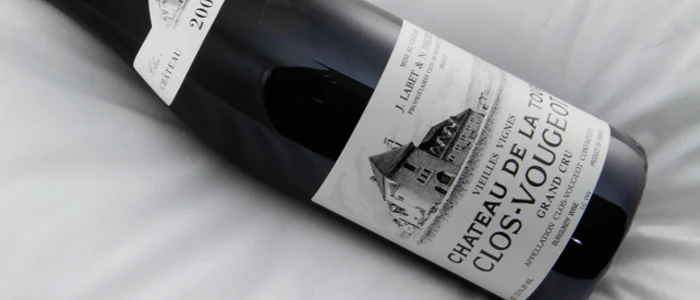
“Nós não arrancamos parcelas no Château de La Tour, apenas substituímos as vinhas que morrem. Elas podem morrer por doenças, por velhice, ou por acidentes (como quando uma máquina atropela ou quebra os troncos). Dos 55.000 ou 56.000 pés, nós replantamos cerca de 1.200 por ano, o que é bem pouco”.
As vinhas de La Tour
a idade média das vinhas
da parcela de 1 ha das Vieilles Vignes
no Château de La Tour
replantados, um a um
Depois da filoxera
O Pinot Noir da Borgonha é fonte de muitas lendas, porém, François desmistifica cada detalhe, incluindo a origem de suas vinhas: “As vinhas de pé-franco não existem mais na França, pois depois do ataque da filoxera todas as plantas são enxertadas. Como toda a França, o Château de La Tour foi atacado pela Filoxera. Para ter uma ideia, se você visse o mapa vitícola da França em 1870, veria vinhedos por TODA a parte, e depois da Filoxera, apenas os locais onde a produção era de grande qualidade é que foram replantados (é por isso que a produção francesa diminuiu consideravelmente após a Filoxera)”.
“Eu não tenho clones, porque considero que a diversidade é algo essencial. O clone é como se fôssemos todos iguais, ou seja, não é muito interessante; o que é interessante é ter grandes, pequenos, loiros, morenos, olhos azuis, verdes. Isso é interessante!”
“Aqui no Château de La Tour, antes da vindima, escolhemos as plantas mais interessantes e, depois da colheita, extraímos material para enxerto das melhores plantas. Entregamos isso ao nosso viveirista e, 18 meses depois, ele nos entrega uma jovem planta enxertada. O que ele faz é enxertar as partes/pedaços da planta que mandamos para ele sobre um porta-enxerto, o ‘cavalo’, uma vinha de origem americana resistente à filoxera.”
“Este pé, na verdade, serve unicamente de alimentador, não é o cavalo que vai fazer a qualidade final do produto, é o garfo, o ‘cavaleiro’, que define a casta da uva que vamos colher (claro que alimentado pelo cavalo). Nós escolhemos o cavalo em função do solo, e para isso conduzimos análises para podermos encontrar a melhor compatibilidade”.
04O vinho na adega
François explica suas reflexões e sua filosofia de vinificação: “Na Borgonha devemos ser muito precisos; o Pinot é um fruto muito delicado de sumo transparente, e em nossas garrafas, temos 100% deste mesmo fruto, ou seja, não podemos ‘brincar’ com diferentes cepagens (um pouco disso aqui, um pouco disso lá) como em outras regiões vitícolas, e por isso uma triagem rigorosa é fundamental”.
Cachos inteiros desde 1987
“Em 1986 houve uma mudança. Eu me encontrei com Michel BETTANE, que é para mim o maior especialista de vinho que existe (aliás, é uma grande pena que ele não escreva em Inglês, porque ele deveria ter um reconhecimento global), e ele me disse: vá provar Jean-Jacques Confuron, André Pernin-Rossin, Georges Chicotot… vinhos vinificados com cachos inteiros, com o engaço. Então eu fui provar seus vinhos, e foi então que eu tive uma revelação. Eu disse: voilà! É isso que eu quero fazer! Os vinhos que eu provei quando era criança, eles eram produzidos assim!”
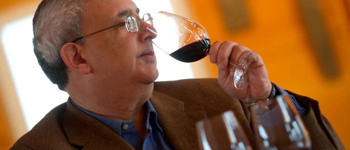
“Então, em 1987, na minha quarta vinificação (depois de 1984 que foi um ano terrível, 1985 que foi um bom ano, 1986 que foi difícil) eu mudei. Fiz minha própria revolução, mudei completamente, usando 100% de cachos inteiros e, a partir de então, nunca mais abri exceções. Qualquer que seja o ano: cacho inteiro, cacho inteiro, cacho inteiro! E eu sustento!”
Cacho inteiro, cacho inteiro, cacho inteiro! E eu sustento!
François LABET
“Bom, se você tem um fruto perfeitamente maduro, então você tem o potencial para fazer um vinho perfeitamente bom (porque se você tem um fruto que não está perfeitamente maduro, você pode ser o melhor vinificador do mundo que vai fazer, no máximo, um belo vinho e não um vinho perfeitamente bom)”.
“O postulado é este: Como fazer Grandes vinhos? Só podemos fazer Grandes vinhos a partir de uvas maduras! E isso é tudo”.
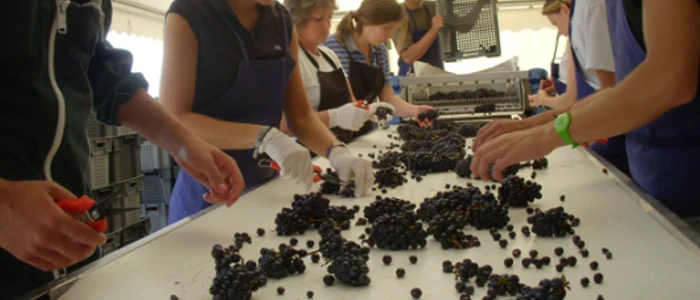
Para François LABET, o grande benefício da evolução da enologia são as tecnologias que permitem controlar o processo e ajudar a transformação do mosto em vinho: “Eu penso que meus vinhos são ‘gêmeos’ dos grandes vinhos anteriores à Guerra. Antes da Guerra não se usavam herbicidas, produzíamos frutos naturais. Além disso, na vinificação, não havia desengace, e a maceração era lenta e longa.”
“Mas a diferença fundamental entre os vinhos que eu faço e os de antes da guerra, é que eu não começo a fermentação imediatamente. A partir de 2004, em todos os meus vinhos (brancos ou tintos), a fermentação é totalmente natural; eu não uso nenhuma levedura, enzima, nada. É a natureza que decide, o que nós fazemos é apenas ajudar a transformação”.
“Hoje em dia nós podemos fazer grandes vinhos de guarda porque temos tecnologia e materiais modernos. Outra grande diferença entre hoje em dia e 1959 ou 1947, é que naquela época não havia como refrigerar as cubas. Em 1959, por exemplo, meu avô comprou TODAS as barras de gelo produzidas entre Dijon e Chalon-sur-Saône. Ele jogava o gelo em torno das cubas tentando refrigerá-las! E hoje em dia nós apertamos um botão e diminuímos a temperatura, ou seja, nós dispomos de todos os meios de controle do processo”.
A barrica feita para cada safra
O terceiro ciclo da produção de Grandes vinhos é a élevage, ou seja, a evolução do vinho após a fermentação até o momento do engarrafamento e, mais uma vez, François explica todos os detalhes: “Para o envelhecimento, é a mesma coisa. Nossas barricas são relativamente novos para que haja a troca entre o interior e o exterior (como você sabe, a barrica é estanque ao líquido, mas não ao gás, o que permite a troca entre o vinho e o ar). Eu compro minhas aduelas de carvalho (apenas de granulação fina, para que a oxigenação seja a menor possível). A origem me importa muito pouco (Vosges, Nevers…), e o meu tonnelier, o tanoeiro Stéphane CHASSIN, vem degustar o vinho uma vez que é terminada a vinificação (eu falo do tinto claro), e, oito dias depois, me entrega as barricas que ele construiu em função de sua percepção do vinho e da safra. Ele é um pequeno tonnelier, que trabalha apenas com seu filho, e deve estar muito contente com o resultado porque ele sempre pede para trazer clientes estrangeiros para ver e degustar seu trabalho” [risos].
Da tanoaria ao chais
- 1O tonnelier Stéphane CHASSIN
- 2Barrica do Château de La Tour, safra 2011
- 3François LABET no chais do Château de La Tour
“Eu sempre considerei assustador que se compre um barril antes de o vinho estar pronto. Eu sempre me perguntei como era possível comprar uma barrica (eu falo de algo bem feito, é claro, feito manualmente) que foi fabricado sem que se soubesse se seria utilizado para um vinho tinto, ou para um vinho branco, se para um Merlot, ou Pinot, ou Cabernet: são vinhos completamente diferentes, e, portanto, as barricas não podem ser feitas da mesma maneira.”
“Tudo o que meu tonnelier produz para mim é sempre perfeito. Na cuvée vieilles vignes eu uso 100% de barricas novas, e nós não sentimos a expressão da madeira. Uma barrica dá ao vinho seu aroma (os aromas do carvalho), mas também seus taninos, então ele deve ser uma bela maquiagem, porém, jamais uma máscara!”
Uma bela maquiagem, porém, jamais uma máscara!
François LABET, sobre a madeira
“A madeira não pode passar por cima do vinho e, degustando todos os anos com Michel BETTANE (apelações inteiras muitas vezes), nos damos conta que há vinhos que são muito ‘bem nascidos’, porém ‘malcriados’” [risos].
“A élevage é um componente essencial. Uma boa élevage não vai corrigir o vinho se as uvas não estavam bem maduras, porém uma élevage mal feita pode danificar um excelente vinho que foi feito a partir de uvas bem maduras”.
O ciclo de élevage de grandes vinhos é longo e, como exemplo, François lembra a safra de 2008, que até 2010 ainda não estava pronta: “O ano de 2008 é um excelente exemplo. Em março de 2010, a fermentação malolática já havia terminado, o vinho se degustava bem, tinha suficiente tempo em barrica, porém, ainda faltava alguma coisa, então o que nós fizemos foi muito simples: fizemos a soutirage, a trasfega, à mão. Depois fizemos uma assemblagem em cuba, deixando lá até a vindima seguinte. Seis meses de cuba! E a cada quinze dias ele se mostrava melhor e melhor. O vinho tinha necessidade de estar em volume para que houvesse uma osmose perfeita”.
“O grande princípio da élevage é que é o vinho que comanda! Não sou eu que devo dizer se engarrafo o branco no mês de setembro e o tinto no mês de janeiro. Não. Eu engarrafo quando o vinho tem necessidade de ser engarrafado”.
Com muita franqueza, François admite não ter a resposta exata para por que seus vinhos são diferentes dos de seus vizinhos, e mesmo superiores: “Bem, a diferença pode vir do modo de viticultura, ou da idade da vinha. Sim, a idade da vinha, claro! Porque nós podemos considerar que vinhas que têm mais de 100 anos, cujas raízes ‘encontraram seu lugar’ em profundidade, assimilam e incorporam o terroir muito melhor do que uma vinha jovem, cujas raízes vão estar a apenas 1 ou 1,5 m de profundidade. Mas isso faz parte exatamente do grande mistério do vinho!”
“O homem é como um maestro”
Perguntado se o homem é um elemento determinante, ele responde: “O homem (o produtor) é como um maestro! E o maestro é quem vai guiar o sistema. Quando ele está regendo, não pode se comparar a nenhum outro, é somente após, quando ouvir a gravação de seu concerto (no meu caso, provar minha garrafa) é que esse maestro vai encontrar as diferenças – e eu, provando meu vinho, vou encontrar diferenças também. Mas as orquestras não são compostas pelas mesmas pessoas, e elas sopram de maneira diferente, tocam de maneiras diferentes… acho que é um pouco como isto”.
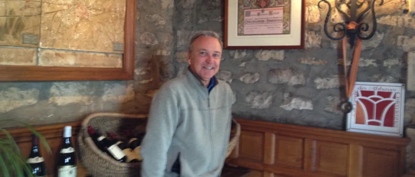
“As velhas safras são minhas referências. Os vinhos do passado (quer sejam os vinhos de meu avô, ou mesmo outros), as grandes apelações em Grandes anos do passado, são minhas referências. Eu acho que meus vinhos certamente são atraentes, pois se vendem sem muita dificuldade e meus clientes gostam (e outras pessoas, além de meus clientes, também gostariam de tê-los)”.
“Efetivamente eu sou intimamente atraído pelo tipo de vinho que eu produzo. Eu encontro essa atração nos produtores que cultivam e vinificam de maneira idêntica como: o Domaine de la Romanée-Conti, o Domaine LEROY, o Domaine Confuron-Cotetidot, cujos vinhos eu ‘encontro’ sem a menor dificuldade, mesmo às cegas! Com esses vinhos eu posso efetivamente comparar o meu, e isto é em função da vinificação de cachos inteiros, que faz com que nós tenhamos vinhos com o mesmo tipo de estrutura, quase que mesma estrutura aromática também – é claro que o terroir fará a diferença no ‘final’ do vinho”.
E nos conta o curioso caso em que confundiu seu próprio vinho: “Há pouco tempo, na casa de um amigo, eu degustei às cegas um vinho e disse: este é o meu Vieilles Vignes 1996, mas não era! Era o Grands-Échezeaux 1996 do Domaine de la Romanée-Conti, e eu pensei que era meu vinho! O Grands-Échezeaux, como você sabe, fica exatamente atrás do muro do Clos de Vougeot. Essa foi uma experiência marcante”.
05Do Bourgogne de 10 euros ao Grand Cru
“O Clos de Vougeot é uma mistura da suprema elegância de Musigny, com a grande potência (talvez austera) do Grands-Échezeaux e a finesse do Échezeaux. Nós estamos no meio de tudo isto, então efetivamente existe certa semelhança com o Grands-Échezeaux, e isso prova que meus vinhos não são tão ruins assim!” [risos].
Domaine Pierre LABET, do Bourgogne ao Meursault
E, apesar de todo o tempo e dedicação que um Grande vinho demanda, Château de La Tour não é suficiente para ocupar 100% do tempo de François: “Eu tenho outro Domaine, que se chama Domaine Pierre LABET, porque Château de La Tour é exclusivamente Clos de Vougeot. Château de La Tour vem do lado de minha mãe, e Pierre LABET do lado de meu pai, e nós cultivamos vinhedos de Gevrey-Chambertin até Meursault, sob os mesmos princípios de viticultura. Esses vinhos são feitos da mesma maneira que Château de La Tour, e eu produzo toda a gama de apelações: regional, village, Premier Cru e Grand Cru. Tudo é vinificado e amadurecido aqui no Château de La Tour. Nós produzimos vinhos de nossas propriedades. Não existe compra de uvas”.
“É muito mais difícil fazer um Bourgogne tinto, que é uma apelação regional, do que fazer um Grand Cru. Eu bebo mais frequentemente meu Bourgogne tinto que Château de La Tour. E os clientes nunca se enganam, porque é nas pequenas apelações dos melhores Domaines que se encontram as melhores oportunidades, as melhores relações qualidade/preço. E com relação a meus 2010, eu fui laureado com as melhores notas em nossos Bourgognes tinto: Beaune tinto, Beaune Premier Cru, e a melhor nota de Gevrey por Allen MEADOWS. Nada mal!”
Os vinhos do Domaine Pierre Labet em 2012
Tinto
- Bourgogne Vieilles Vignes
- Bourgogne Pinot Noir Vieilles Vignes
- Beaune Clos des Mosnières
- Beaune Clos du Dessus des Marconnets
- Beaune Premier Cru Coucherias
- Gevrey-Chambertin
Branco
- Bourgogne Vieilles Vignes
- Bourgogne Chardonnay Vieilles Vignes
- Beaune
- Beaune Clos des Mosnières
- Beaune Clos du Dessus des Marconnets
- Meursault Les Tillets
- Savigny-lès-Beaune Premier Cru Vergelesses
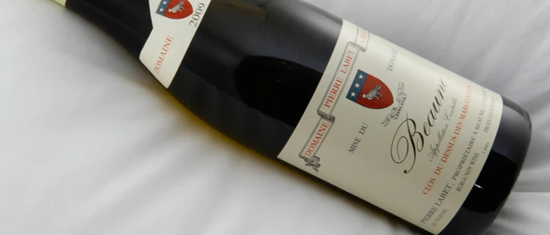
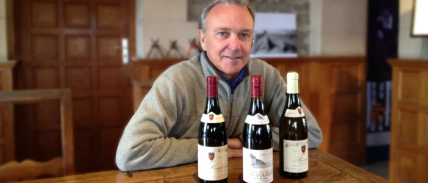
“Estes vinhos são produzidos com o mesmo cuidado, com barris recentes e uma quantidade de barris novos mesmo para Bourgogne tinto. Para mim, tem de ser bom de A a Z ou, dependendo, de Z a A. Toda a gama deve ser boa e eu não posso me permitir produzir vinhos que não estejam no topo de suas apelações. Não posso colocar meu nome em um vinho que não seja top”.
“Eu não faço exceção. Não faço primeurs. Mesmo se hoje em dia nossos clientes querem vinhos de longa guarda para beber imediatamente, eu não faço exceção. Esses vinhos precisam de um pouco de tempo para se tornarem os vinhos para os quais foram feitos, ou seja, para darem um imenso prazer depois de 7 ou 8 anos e ainda serem capazes de durar”.
Preço, Brasil e hospitalidade
A última etapa do ciclo de produção de um vinho é a venda, e François mais uma vez fala abertamente dessa atividade que consome mais tempo do que ele gostaria: “Nós temos um cliente por país no que tange à exportação e o mais difícil é ter um ano como 2010, com metade do volume de 2009. Eu não aumentei meus preços entre 2009 e 2010, e na Borgonha nós somos assim: não entramos nesse jogo de especulação. A Borgonha não é como as outras grandes regiões vinícolas francesas. Nós somos razoáveis. A maioria das propriedades é familiar; de famílias que trabalham em suas terras há dezenas de gerações”.
Sobre o Brasil, François LABET fala sempre com muito respeito: “No Brasil, existe uma clientela de consumidores muito interessante! Em um ano como 2009, em que produzimos 2.500 caixas de Château de La Tour (quase 30.000 garrafas), exportamos 50 caixas para o Brasil – claro que eu vendo muito mais na Inglaterra, Estados Unidos e Japão, o que é normal”.
“Não, eu não me incomodo de falar de preço. Para o Château de La Tour o preço ex-cellar fica entre 50 e 60 € para a cuvée clássica e entre 70 e 80 € para a cuvée Vieilles Vignes. Para os vinhos do Domaine Pierre Labet, em torno de 10 € o Bourgogne tinto (o que é caro para a apelação), 15 € os villages tintos, 20 € os villages brancos, e Premier Crus tintos, e 25 € os Premier Crus brancos, que são preços completamente dentro da normalidade. Claro que os preços no comércio podem ser diferentes, porque podem passar por intermediários”.
O Château de La Tour em 2009
quase 30.000 garrafas
para o Brasil
a cuvée clássica, em 2012
a Vieilles Vignes
Sempre demonstrando seu amor pela Borgonha, François insiste para que os brasileiros visitem sua região: “Eu sou presidente do sindicato do Clos de Vougeot e, claro, muito apegado à ideia de ver nossa região nomeada como patrimônio mundial (a candidatura está sendo preparada e, agora, esperamos a nomeação). Isto seria um reconhecimento formidável, mas eu não creio que traga milhões de turistas a mais. Em todas as viagens que faço ao exterior (e ao Brasil em particular), eu sempre digo: venham nos visitar, venham respirar nossos ares, venham ver como é. E só depois de terem visto, caminhado, ouvido as histórias, é que poderão compreender melhor a Borgonha. Se a pessoa nunca veio até aqui, não consegue imaginar o quanto somos pequeninos e fragmentados!”
Nota da redação (2026) Os Climats da Borgonha entraram para o patrimônio mundial em 2015. François LABET presidiu o BIVB, o conselho interprofissional dos vinhos da Borgonha, de 2021 a 2023; hoje o sindicato do Clos de Vougeot é presidido por seu filho, Édouard LABET.
E aproveita para nos contar um pouco de sua percepção sobre a alma da Borgonha. “Aqui no Château de La Tour nós temos uma grande tradição de receber, mas se você pegar seu telefone e ligar para qualquer produtor ele vai lhe receber, mesmo se ele não tiver mais nada para vender, porque nós temos esta tradição de hospitalidade e generosidade. Na Borgonha você pode degustar todos os vinhos, mas dificilmente comprá-los. Em outras partes você pode comprar de tudo, mas dificilmente degustar, até mesmo um Domaine como o Romanée-Conti é acessível (sob reserva, é claro). Nós temos uma tradição de hospitalidade na Borgonha que existe de verdade!”, esclarece François.
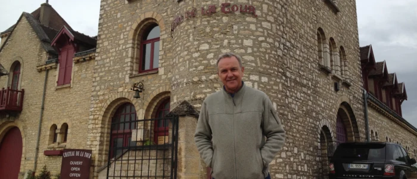
Se visitar a Borgonha, não deixe de agendar uma visita ao Château de La Tour, no Clos de Vougeot. Você tem grandes chances de ser recebido pelo próprio François LABET.
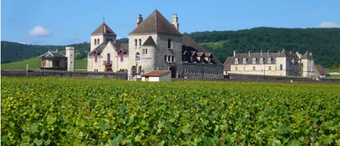
Glossário
Para entender
- Clos
- Vinhedo cercado por muros. O Clos de Vougeot foi murado pelos monges de Cîteaux até 1336.
- Climat
- Na Borgonha, uma parcela com nome, limites e caráter próprios, reconhecidos há séculos. Os Climats são patrimônio mundial desde 2015.
- Regional, village, Premier Cru, Grand Cru
- Os quatro degraus das apelações da Borgonha, do vinho de toda a região (Bourgogne) ao de uma única parcela de elite. Os Grands Crus são cerca de 1% da produção.
- Négociant
- Comerciante que compra uvas, mosto ou vinho para engarrafar e vender com a própria marca. Os fundadores de La Tour eram négociants.
- Cuverie
- A sala das cubas, onde o vinho fermenta.
- Gourmands
- Brotos que nascem no tronco e consomem seiva sem dar fruto; são retirados na primavera.
- Vendange verte
- A colheita em verde: cortar cachos no verão para concentrar a vinha nos que ficam. François é contra.
- Véraison
- O momento em que as uvas mudam de cor, ou ficam translúcidas nas castas brancas, e começam a amadurecer.
- Engaço
- A parte lenhosa do cacho (rafle, em francês). Vinificar com cacho inteiro é manter o engaço na cuba, o que exige que ele também esteja maduro.
- Guyot e Cordon de Royat
- Os dois sistemas de poda da Borgonha. No Guyot, um braço frutifica a cada ano, alternando; no Cordon, os dois braços produzem todo ano.
- Pé-franco e porta-enxerto
- Depois da filoxera, identificada na França em 1863 e chegada à Borgonha em 1878, quase toda vinha europeia é enxertada sobre raiz americana resistente, o ‘cavalo’.
- Clone e seleção massal
- O clone reproduz uma única planta; a seleção massal, que François pratica, multiplica as melhores plantas da própria vinha e preserva a diversidade.
- Élevage
- O amadurecimento do vinho entre a fermentação e o engarrafamento.
- Soutirage
- A trasfega: passar o vinho de uma barrica para outra, separando-o das borras (lies) depositadas no fundo.
- Tonnelier
- O tanoeiro, que faz as barricas.
- Primeurs
- A venda do vinho antes do engarrafamento, tradicional em Bordeaux.
- Ex-cellar
- O preço na porta da adega, sem impostos nem intermediários.
Quem é quem
- Gabriel-Julien OUVRARD
- Banqueiro e fornecedor dos exércitos de Napoleão, comprou o Clos de Vougeot em 1818 e La Romanée-Conti em 1819.
- Léonce BOCQUET
- Négociant de Savigny-lès-Beaune, comprou o castelo do Clos em 1889 com cerca de 15 ha e o restaurou. Morreu em 1913.
- Confrérie des Chevaliers du Tastevin
- Confraria fundada em 1934 em Nuits-Saint-Georges para promover os vinhos da Borgonha. Tem sede no Château du Clos de Vougeot.
- Michel BETTANE
- Crítico francês, um dos fundadores da imprensa especializada de vinho na França.
- Allen MEADOWS
- Crítico americano especializado em Borgonha, fundador do Burghound.